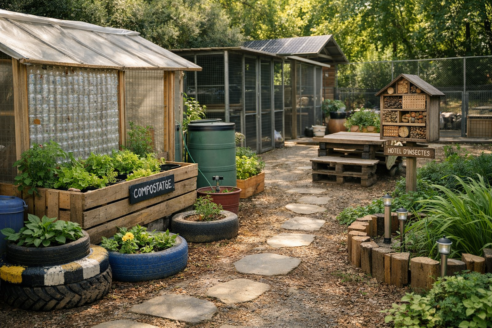

Huellas Verdes
Un taller dedicado a la sostenibilidad y la biodiversidad, donde aprenderemos a cultivar nuestro propio huerto y a crear espacios para la fauna auxiliar.

En "Huellas Verdes" conectamos con la tierra. Descubriremos los secretos de la agricultura ecológica y cómo podemos ayudar a los insectos polinizadores y a las aves pequeñas creando hábitats seguros en nuestro entorno.
Cuidar de las plantas y de los pequeños animales es cuidar de la salud de todo el planeta.
Aprenderemos técnicas de siembra, riego sostenible y compostaje, entendiendo el ciclo natural de los alimentos y la importancia de no utilizar químicos nocivos.
Construiremos pequeños refugios para abejas solitarias, mariquitas y otros insectos beneficiosos que ayudan a mantener el equilibrio de nuestros ecosistemas.
“Cada paso verde que damos deja una huella positiva en el planeta.”
HUELLAS VERDES